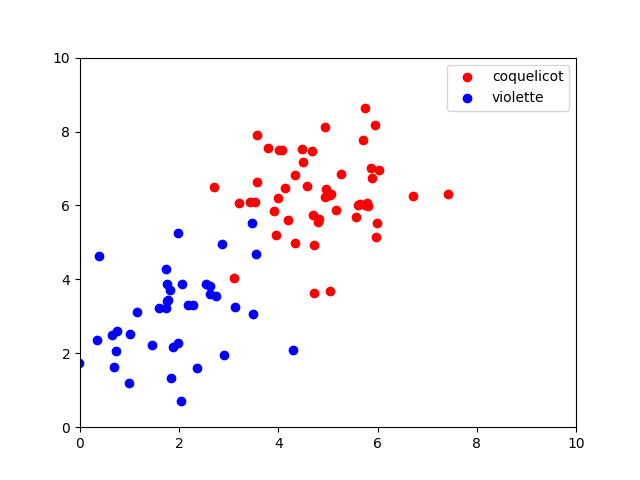
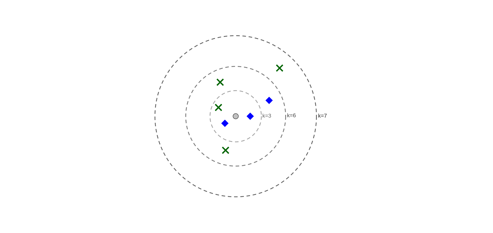

C16 Notion de nombre flottant
Activités
 Activité 1 : Classification
Activité 1 : Classification
-
Dans un champ, à l'état sauvage deux types de fleurs ont poussés : des coquelicots et des violettes. On a représenté ci-dessous par un schéma la position de ces fleurs dans le champ.
- les points rouges représentent des coquelicots
- les points bleus résentent des violettes
 Comme vous pouvez le constater, en dépit de certaines variations, les violettes semblent plus pousser dans la partie inférieure gauche du champ tandis que les coquelicots poussent plutôt vers la partie centrale du champ.
Trois nouvelles pousses apparaissent dans ce champ, on les a représenté par des points de couleurs grises et on les identifie avec les noms
P1, P2etP3comme représenté ci-dessous : On cherche à prédire si ces pousses sont des coquelicots ou des violettes.
On cherche à prédire si ces pousses sont des coquelicots ou des violettes.- Que peut-on dire pour la pousse
P1? - Même question pour la pousse
P2. - Que dire du cas de
P3? Peut-on répondre avec le même niveau de confiance que pourP1etP2? - Ci-dessous on a tracé un cercle de façon à faire apparaître les 5 voisins les plus proches de la pousse P3. Prédire le cas de
P3en choisissant l'espèce majoritaire de ce cercle.
- A la question précédente, on a prédit le cas de
P3avec l'algorithme des k plus proches voisins. Quel est le principe de cet algorithme ? Avec quelle valeur de k a-t-il été utilisé ?
-
On considère le nouvel exemple suivant dans lequel la donnée à classer est représentée par le point gris central: 
- Quel est le résultat de l'algorithme des k plus proches voisins lorsque k=3 ?
- Même question lorsque k=6.
- Même question lorsque k=7.
- Que peut-on dire pour le résultat prédit par l'algorithme suivant les valeurs de k ?
- Quelles valeurs de k permettent d'éviter les cas d'égalités ?
Activité 2 : Mise en oeuvre en Python
Cours
Vous pouvez télécharger une copie au format pdf du diaporama de synthèse de cours présenté en classe :
Attention
Ce diaporama ne vous donne que quelques points de repères lors de vos révisions. Il devrait être complété par la relecture attentive de vos propres notes de cours et par une révision approfondie des exercices.
QCM
1. A quelle catégorie appartient l'algorithme des k plus proches voisins ?
- a) Algorithmes de classification et d'apprentissage
- b) Algorithmes de tri
- c) Algorithmes gloutons
- d) Algorithmes de recherches de chemins
- a) Algorithmes de classification et d'apprentissage
- b)
Algorithmes de tri - c)
Algorithmes gloutons - d)
Algorithmes de recherches de chemins
2. Quelle est l'affirmation correcte ?
- a) L'algorithme des k plus proches voisins peut donner des résultats différents suivant les valeurs de k
- b) L'algorithme des k plus proches voisins donne toujours le même résultat suivant les valeurs de k
- c) On ne peut pas modifier la valeur de k dans l'algorithme des k plus proches voisins
- d) La valeur de k doit être impair dans l'algorithme des k plus proches voisins
- a) L'algorithme des k plus proches voisins peut donner des résultats différents suivant les valeurs de k
- b)
L'algorithme des k plus proches voisins donne toujours le même résultat suivant les valeurs de k - c)
On ne peut pas modifier la valeur de k dans l'algorithme des k plus proches voisins - d)
La valeur de k doit être impair dans l'algorithme des k plus proches voisins
3. Comment est classé la donnée représentée par le point gris central en utilisant l'algorithme des 10 plus proches voisins ?

- a) La nouvelle donnée est un rond rouge
- b) La nouvelle donnée est un losange bleu
- c) La nouvelle donnée est une croix verte
- d) L'algorithme échoue et ne peut pas préduire
- a)
La nouvelle donnée est un rond rouge - b)
La nouvelle donnée est un losange bleu - c) La nouvelle donnée est une croix verte
- d)
L'algorithme échoue et ne peut pas préduire